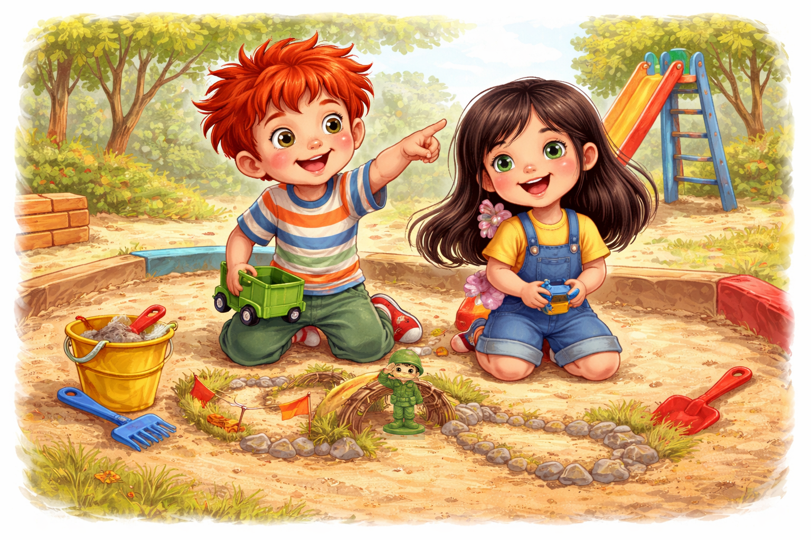
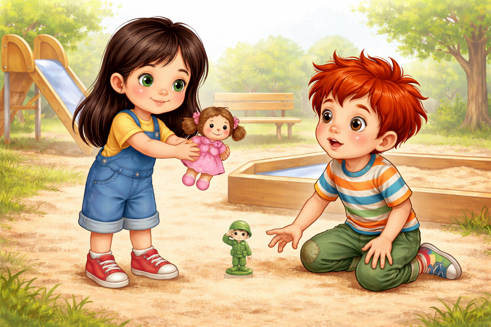
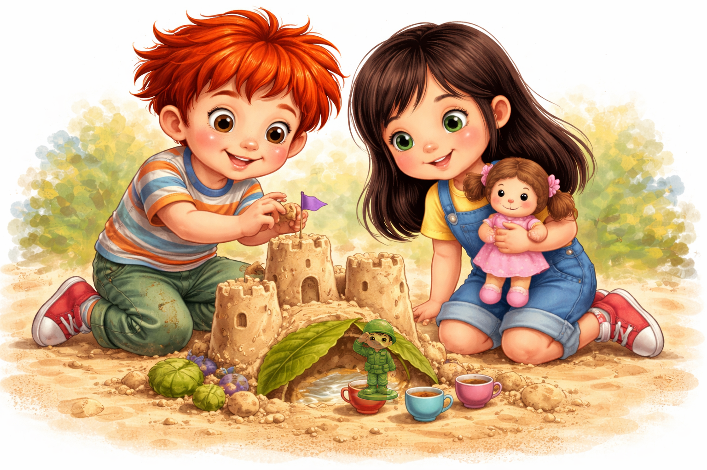

Палавко пристигна на площадката с Рико в джоба. Рико беше малък зелен пластмасов войник, но Палавко го носеше така внимателно, сякаш водеше истински генерал на важна мисия.
- Днес ще проверим пързалката, люлките и пясъчника - прошепна Палавко. - Всичко трябва да е готово за игра.
Още преди да стигне до пясъчника, едно момиченце с черна коса и зелени очи му махна с ръка.
- Здравей! Аз съм Гери. Искаш ли да направим път до пързалката?
Палавко погледна пясъка. Гери вече беше започнала да строи малко мостче от клонки и листа. До нея стоеше кукла с розова рокля, почти колкото Рико.
- Път до пързалката? - очите на Палавко светнаха. - Може да е таен път!

Той клекна до Гери. Двамата започнаха да копаят, да подреждат камъчета и да правят завой около една голяма жълта кофичка. Палавко сложи Рико до моста да пази, а Гери постави куклата си до малките чашки.
- Тук ще има пропускателен пункт - каза Палавко важно.
- А тук ще има чай за уморените пътници - добави Гери.
Играта тръгна толкова хубаво, че Палавко забрави да се прави на много сериозен. Той се смееше, когато мостът падаше, а Гери се смееше, когато пясъчният път завиваше право в кофичката.

Предложението
След малко Гери взе куклата си и я подаде напред.
- Искаш ли да си разменим играчките за малко? Ти ще си поиграеш с моята кукла, а аз с Рико.
Палавко изведнъж спря да се смее. Погледна куклата. После погледна Рико. После пак куклата.
- Не - каза той бързо. - Момчетата не си играят с кукли. А момичетата не си играят с войници.
Усмивката на Гери се сви като балонче, от което е излязъл въздухът.
- Аз само исках да продължим играта - прошепна тя.
Очите й се напълниха със сълзи. Тя прибра куклата, отиде на пейката и седна настрани.
Палавко се почувства странно. Пясъчният път беше още там. Мостът също. Само играта вече не вървеше.

Сам не е същото
- Хайде, Рико - каза той. - Ние ще играем сами.
Той се пързаля сам. После се люля сам. После се катери сам по катерушката и говореше само на Рико.
- Виж, Рико, аз мога и сам.
Но "сам" не звучеше като победа. Звучеше като празна люлка, която скърца без никой да й се смее.
Рико стоеше изправен, както винаги, но гласът му беше тих:
- Палавко, аз бих си поиграл с Гери.
Палавко застина.
- Как така? Ти си моят Рико!
- Да - каза Рико. - И точно затова искам играта да бъде хубава. А хубавата игра не пита дали някой е момче или момиче. Пита само: "Искаш ли да си представяме нещо заедно?"
Палавко погледна към пейката. Гери държеше куклата си и гледаше към пясъчника. Пясъчният мост беше останал недовършен.
Палавко слезе от катерушката и тръгна към нея. Вървеше бавно, защото понякога най-късото разстояние е това до едно "извинявай".
- Гери - каза той. - Май казах нещо не много хубаво.
Гери го погледна.
- Аз не исках да ти взема Рико. Само исках да играем заедно.
Палавко кимна.
- Знам. Съжалявам.
Нови приятели
Тогава Рико, който стоеше в ръката му, се обърна към куклата.
- Здравей - каза той с най-официалния си войнишки глас. - Искаш ли да сме приятели?
Куклата, разбира се, не говореше на всички. Но в игрите на децата играчките разбират много неща.
Гери се усмихна и каза с тънък глас:
- Да. Аз мога да бъда капитан на чаеното кралство.
Рико изпъчи гърди.
- А аз ще пазя моста към пързалката!

Палавко се засмя. Гери също. Скоро куклата и Рико вече не бяха "играчка за момиче" и "играчка за момче". Бяха двама герои в една обща история.
Палавко направи крепост от пясък. Гери построи дворец от листа. Рико пазеше портата, а куклата посрещаше гости с най-малките чашки, които някой можеше да си представи.
После всички се качиха на пързалката - първо Палавко, после Гери, а Рико и куклата гледаха отстрани като важни съдии.
- Знаеш ли - каза Палавко, - май е по-забавно, когато играем заедно.
- Да - каза Гери. - Така играта става по-голяма.
Рико кимна толкова важно, че каската му почти блесна.
И от този ден Палавко знаеше: играчките нямат табелки "само за момчета" или "само за момичета". Те имат място за въображение. А въображението обича всички, които искат да играят честно и заедно.
До следващата пакост с Палавко!